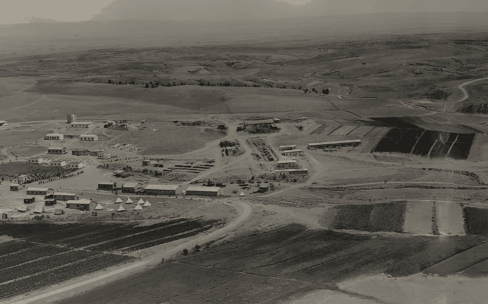
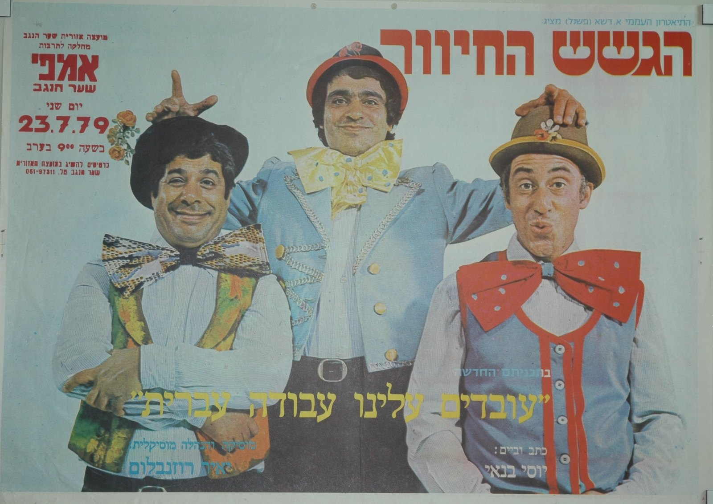
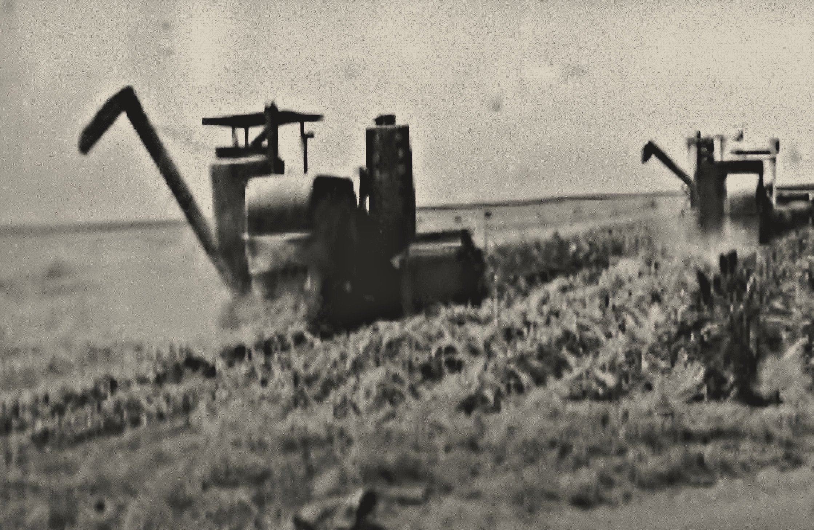

סיפורים, תצלומים, מסמכים ועדויות של שתים-עשרה הקהילות והמועצה, מ-1941 ועד היום. חפשו יישוב, אדם, מקום, אירוע או שנה.
אוצרות הארכיון
כרזות ותצלומים מאוספי הקהילות והמועצה.

עוד מאוצרות הארכיון
- הגשש החיוור · אמפי שער הנגב · 1979
- להקת גזוז · אמפי שער הנגב · 1978
- להקת מחול בת-דור · אמפיתיאטרון שער הנגב · 1980
- אסיפה בחצר · גבים · 1947
- כוכבי הטלוויזיה · אמפיתיאטרון שער הנגב · 1977
- להקת צליל מכוון · אולם קיבוץ דורות · 1976
- הכבש השישה-עשר · אמפי שער הנגב · 1982
- יוסי בנאי · אמפיתיאטרון שער הנגב · 1981
- הגשש החיוור · אולם דורות · 1983
- צעדת הכלניות · 2006
ציר הזמן
מההתיישבות בנגב המערבי ועד היום.
-
1941הקמת יישובי האזור וההתיישבות בנגב המערביתיעוד
הפרק המקדים להקמת המועצה. בתקופה זו הוקמו והתבססו יישובים שהפכו בהמשך לליבת שער הנגב, ובהם דורות, ניר עם, רוחמה, גבים, ברור חיל, מפלסים, ארז, יכיני, כפר עזה ונחל עוז.
להמשך קריאה -
1941הקמת דורות בחנוכה תש״בתיעוד
תיעוד ימי ההקמה של דורות: צילומים, מסמכים וזיכרונות של המייסדים מתוך אוסף הארכיון.
להמשך קריאה -
1943הקמת ניר עם בט״ו בשבט תש״גגלריה
ניר עם הוקם בט״ו בשבט ה׳תש״ג.
להמשך קריאה -
1944הקמת רוחמה, אחרי שני ניסיונות התיישבות קודמיםתמונה
רוחמה נוסדה ב-1944.
להמשך קריאה -
1947הקמת גבים: עשרה צריפים ומגדל מים אחד בלב השדותציטוט
גבים הוקם ב-28 באוגוסט 1947.
להמשך קריאה -
1947חוות איבים: חווה חקלאית של איחוד הקבוצות והקיבוציםתיעוד
תיעוד ימי ההקמה של איבים: צילומים, מסמכים וזיכרונות של המייסדים מתוך אוסף הארכיון.
להמשך קריאה -
1948הקמת ברור חיל: העלייה למשלט במאי 1948תיעוד
תיעוד ימי ההקמה של ברור חיל: צילומים, מסמכים וזיכרונות של המייסדים מתוך אוסף הארכיון.
להמשך קריאה -
1949הקמת ארז: העלייה על הקרקע באוקטובר 1949תיעוד
תיעוד ימי ההקמה של ארז: צילומים, מסמכים וזיכרונות של המייסדים מתוך אוסף הארכיון.
להמשך קריאה -
1949הקמת מפלסים בידי עולים מארגנטינה ומאורוגוואיתיעוד
תיעוד ימי ההקמה של מפלסים: צילומים, מסמכים וזיכרונות של המייסדים מתוך אוסף הארכיון.
להמשך קריאה
-
1950הקמת המועצה האזורית שער הנגבתיעוד
הקמת המועצה היא נקודת הפתיחה המוסדית של שער הנגב. בתחילת דרכה כללה המועצה גם מקומות שאינם נמצאים כיום בתחומה, ובהם שדרות, תלמים ומעברת גבים–דורות.
להמשך קריאה -
1950הקמת המושב יכיני: המשפחות הראשונות והחלקות הראשונותתיעוד
תיעוד ימי ההקמה של יכיני: צילומים, מסמכים וזיכרונות של המייסדים מתוך אוסף הארכיון.
להמשך קריאה -
1951הקמת כפר עזה, היאחזות הנח״ל החמישית על גבול הרצועהתיעוד
תיעוד ימי ההקמה של כפר עזה: צילומים, מסמכים וזיכרונות של המייסדים מתוך אוסף הארכיון.
להמשך קריאה -
1951הקמת נחל עוז, היאחזות הנח״ל הראשונהתיעוד
תיעוד ימי ההקמה של נחל עוז: צילומים, מסמכים וזיכרונות של המייסדים מתוך אוסף הארכיון.
להמשך קריאה -
1956רצח רועי רוטברג, רכז הביטחון של נחל עוזאודיו
אחד האירועים המכוננים בתולדות ההתיישבות מול רצועת עזה. האירוע ממחיש את השילוב המתמשך בין חקלאות, התיישבות, שמירה וביטחון.
להמשך קריאה -
1957הקמת אור הנר בידי בוגרי תנועות נוער מארגנטינהתיעוד
תיעוד ימי ההקמה של אור הנר: צילומים, מסמכים וזיכרונות של המייסדים מתוך אוסף הארכיון.
להמשך קריאה -
1958שדרות הופכת למועצה מקומית עצמאיתקישור
בשנותיה הראשונות טיפלה שער הנגב גם בעיירת העולים שדרות. במהלך העשור השתנו גבולות המועצה: נחל עוז צורפה לתחום הטיפול, ותלמים הועברה למועצה האזורית לכיש.
להמשך קריאה
-
1960המרכז האזורי, מפעלי שער הנגב וקריית החינוךגלריה
מפעלי חקלאות ותעשייה, בית אריזה, מוסך, מכבסה, מנפטה, שירותי בריאות ובית הספר האזורי. משרדי המועצה עברו בהדרגה מדורות אל המרכז האזורי.
להמשך קריאה -
1963מהמרכז ללימודי מבוגרים למכללת ספירתמונה
בית הספר למבוגרים של שער הנגב עבר מן הצריפים לכיתות בבית הספר האזורי, והתפתח בהדרגה למכללת הנגב ובהמשך למכללה האקדמית ספיר.
להמשך קריאה
-
1970פיתוח החינוך, התרבות, הספורט והשירותים האזורייםתיעוד
התרחבות קריית החינוך, המתנ״ס, האולפן למוזיקה ולמחול, שירותי הרווחה, מתקני הספורט והמרכזים הקהילתיים הפכה את שער הנגב ממסגרת של יישובים חקלאיים למערכת אזורית רחבה.
להמשך קריאה
-
1980פיתוח החינוך, התרבות, הספורט והשירותים האזורייםתיעוד
התרחבות קריית החינוך, המתנ״ס, האולפן למוזיקה ולמחול, שירותי הרווחה, מתקני הספורט והמרכזים הקהילתיים הפכה את שער הנגב ממסגרת של יישובים חקלאיים למערכת אזורית רחבה.
להמשך קריאה
-
1990פיתוח החינוך, התרבות, הספורט והשירותים האזורייםתיעוד
התרחבות קריית החינוך, המתנ״ס, האולפן למוזיקה ולמחול, שירותי הרווחה, מתקני הספורט והמרכזים הקהילתיים הפכה את שער הנגב ממסגרת של יישובים חקלאיים למערכת אזורית רחבה.
להמשך קריאה -
1998שותפות שער הנגב–סן דייגווידאו
השותפות החלה בשנת 1998 והפכה לרכיב משמעותי בחינוך, בפיתוח הקהילתי, בהתנדבות, במשלחות ובגיוס משאבים.
להמשך קריאה
-
200050 שנה למועצה האזורית שער הנגבתיעוד
חצי יובל של יישובים, חינוך וקהילה: מסמכים, צילומים וברכות מאירועי שנת החמישים למועצה.
להמשך קריאה -
2006צעדת הכלניות בשדות המועצהגלריה
אלבום התמונות מצעדת הכלניות, צילום ג׳ימי קדושים ז״ל: עשרות תמונות מהמסלול בשדות.
להמשך קריאה
-
201060 שנה למועצה האזורית שער הנגבתיעוד
שישים שנה להקמת המועצה: תערוכת צילומים מהארכיון ומפגש של דור המייסדים עם תלמידי קריית החינוך.
להמשך קריאה -
2010עדויות מוקלטות: דור המייסדים מספראודיו
פרויקט הקלטות של ותיקי היישובים, על הלילה הראשון בנקודה, על העבודה בשדות ועל הקהילה שנבנתה.
להמשך קריאה
-
202070 שנה למועצה האזורית שער הנגבתיעוד
שבעים שנה להקמת המועצה: מבחר מסמכים וצילומים מכל העשורים, מתוך אוסף הארכיון.
להמשך קריאה -
20237 באוקטובר: עדויות הקהילותוידאו
העדויות, הסיפורים והזיכרונות של הקהילות מהשבעה באוקטובר ואילך, בקצב שלהן ובמילים שלהן.
להמשך קריאה

7 באוקטובר 2023
ברגע האמת בחרנו לקום ולעשות
היום שבו הכול השתנה. כאן נאספים העדויות והזיכרונות של הקהילות שלנו, בקצב שלהן ובמילים שלהן.
לעדויות ולסיפוריםעשור בפוקוס
מהמרכז ללימודי מבוגרים למכללת ספיר
ב-1963 עבר בית הספר למבוגרים מהצריפים לבית הספר האזורי, והתפתח בהדרגה למכללה האקדמית ספיר.
לכל הסיפורים של שנות ה-60פרסומים אחרונים
המאמרים, הגלריות והתיעוד שעלו לאחרונה לארכיון.